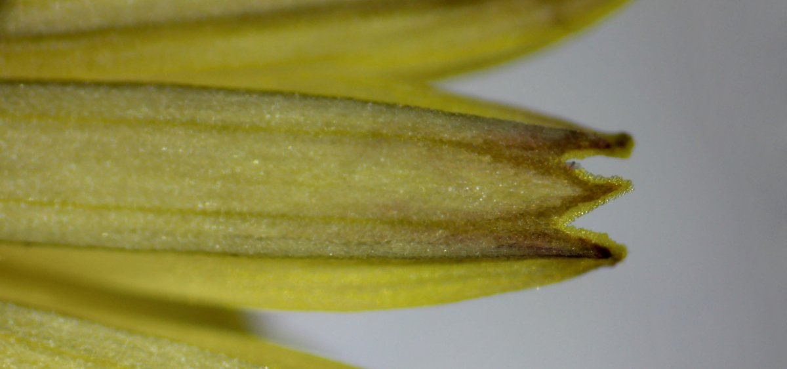
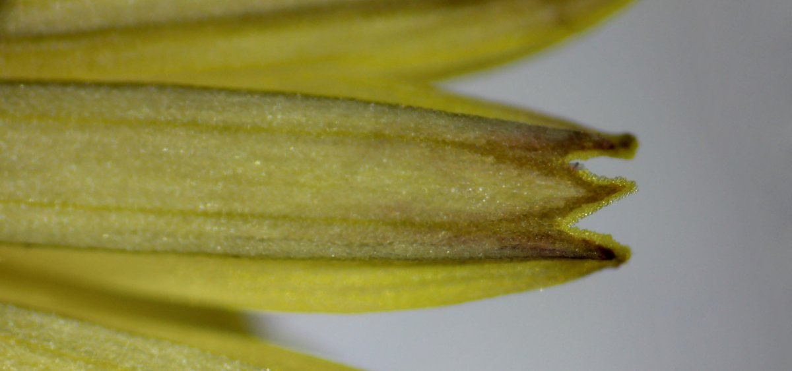
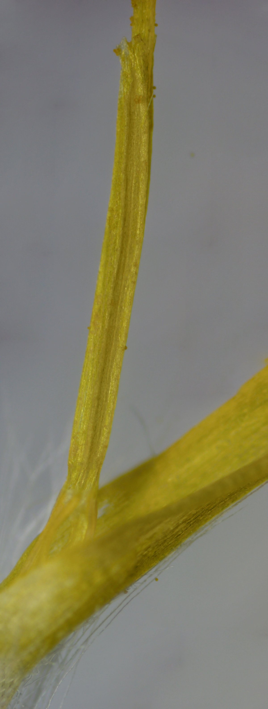
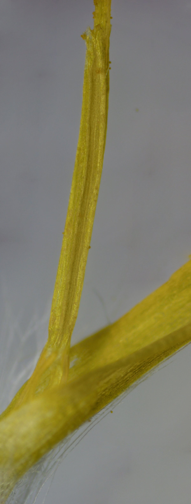

Taraxacum officinale
Pampeliška obecná
Taraxacum officinale
Pampeliška obecná
Pampeliška obecná, vědecky Taraxacum officinale, je druh rostliny z čeledi hvězdnicovitých. Tato rostlina je rozšířena po celém světě a je známá pro své výrazné žluté květy a charakteristické, jemně zoubkované listy, které tvoří přízemní růžici. Pampeliška je tradičně využívána v lidovém léčitelství pro své detoxikační a choleretické účinky, ale je také oblíbenou potravinou pro některá zvířata a lidé ji využívají v kulinářských receptech, například jako ingredienci v salátech či v přípravě nápojů.
Rostlina patří do čeledi hvězdnicovitých. Pro ně jsou typické listy v přízemní růžici a úbor, v němž květy přisedají na rozšiřené lůžko a soubor listenů na spodní straně úboru tvoří zákrov. Je to vrcholičnaté květenství, to implikuje, že postranní stonky nepřerůstají stonek hlavní a květy rozkvétají zdola nahoru, nebo od obvodu do středu květenství.

Jméno taraxacum pochází od tzv. kracovitých tj. specificky (až nepravidelně) zubatých listů. Proto se jí možná také v angličtině říká dandelion (od lat. dens, dentis ~ zub) a v němčině die Löwenzahn. Je otázkou jestli anglický název poukazuje na zubatost listů a barvu květů podobnou lví srsti zvlášť anebo spjatě a tedy připodobňuje listy pampelišky jen chrupu lvů nehledě na jejich srst.
I když by se názvy pampe-liška a dande-lion mohly řídit stejnou logikou, etymologické prameny to nepotvrzují. Vedou totiž na slouvo pléška označující mnišskou pleš. Další jazykovou hrou je i skutečnost, že chmýru se odborně říká pappus. Tak se ve staré latině označoval starý muž a vzpomeňme jaké ti mají bílé vlasy ...
Zubaté nejsou jen zelené asimilační listy. Tři zuby mají na svém konci i jazykovité korunní lístky
 

Ontogeneze květu - než pampeliška vykvete je to dlouhá cesta. Následující galerie ji popisuje.

Pampeliška plodí. Lůžko se vypouklo a zákrov se odklopil a umožnily tak chmýrům volně se rozedmout a vytvořit tak ikonické kulaté chmýří.
Úbor obecně může obsahovat dva typy květů - jazykovité a trubkovité. U pampelišky se vytvářejí jen ty první. Jsou zygomorfní. Mají spodní semeník srostlý ze dvou plodolistů. Z něj vyrůsta stopka s kalichem, který je přeměněn v chmýr. Náleduje trubkovitá část koruního lístku. Uvnitř ní jsou nitky pěti tyčinek, jejichž pouzdra srůstají o něco výše také v trubku, skrz ní prorůstá čnělka s bliznami. Na nich jsou pak přilepeny pylová zrna.
 

Nažka (achaenium), jednoplodolistový plod, má oplodí blanité nebo kožovité a pevněji objímá semeno než u oříšku. Předtavme si např. černá neloupaná slunečnicová „semínka“. Nažky mají často různé výběžky, háčky a chmýr.
Stavba chmýru je pro pampelišku také charakteristická např od chmýru kozí brady luční se dosti značně liší. Existují o něm i vědecké články - studuje se jeho aerodynamika nebo schopnost držet kapičky vody.
Čeleď hvězdnicovitých je typická výskyt mléčnic s latexem a pro seskviterpenické sloučeniny - a pampeliška není vyjímkou (laktulopikrin, taraxacin). Dále obsahuje triterpenické hořčiny taraxasterol a taraxerol. Látky jsou všechny hořké a užívají se jako amara-stomachika a cholagoga. Pro léčivé účinky se užívají drogy Radix taraxaci, Radix taraxici cum herba protože obsahují nejvíce hořčin.
Mléčnice procházejí celým tělem rostliny, od kořenů (znak drogy), přes duté stonky až po listy. Napomáhají integritě při poranění a obsahové hořké látky odrazují herbivory od spásání.
Staročeské pojmenování smetanka je pak odvozeno od smetany. Podobně označení mlíčí používané pro zelenou část rostliny je odvozeno od mléka.
Na stonku a jsou přítomny trichomy. Jsou mnohobuněčné a vytváří dlouhý seschlý řetízek na kterém se světlo láme do takové míry, že se trichomy z dálky jeví bíle.
U slunečnice je asi markantnější, nicméně i u pozice květů na lůžku pampelišky lze najít zlatou spirálu. Pro podtržení tohoto, byl následující květ seříznut na úrovni nažek. Je též vidět, že nažky jsou na příčném řezu kosodelníkové.